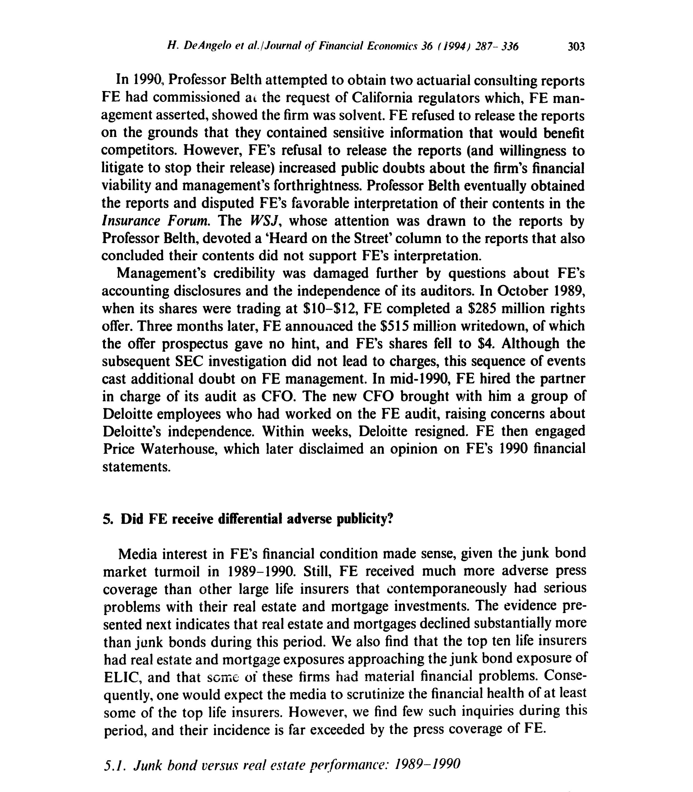
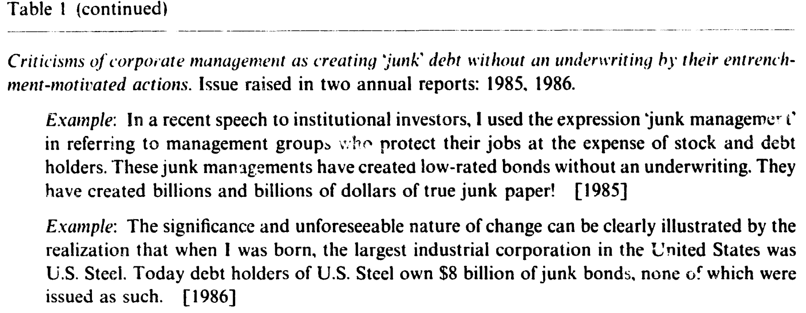
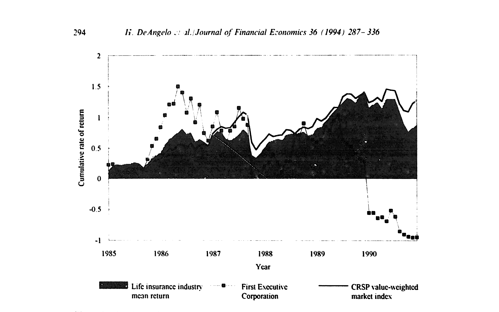
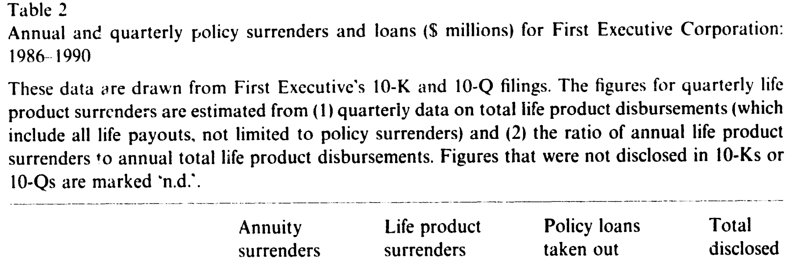
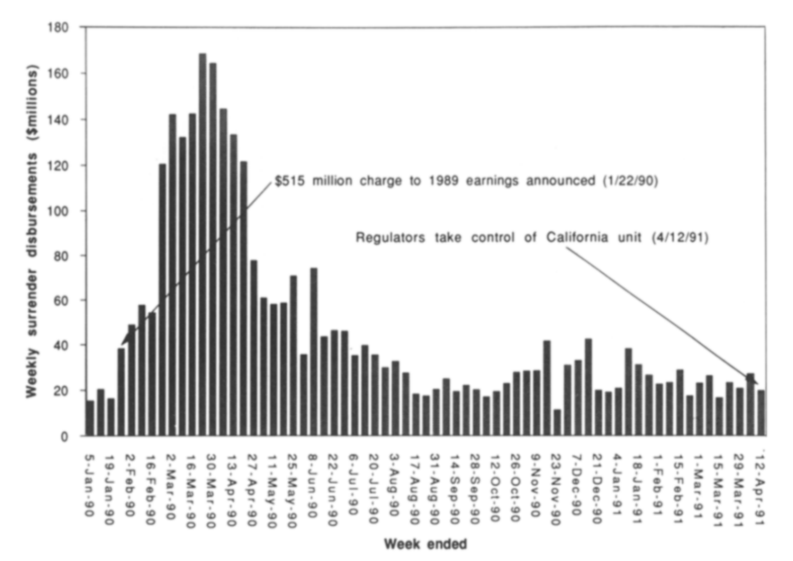
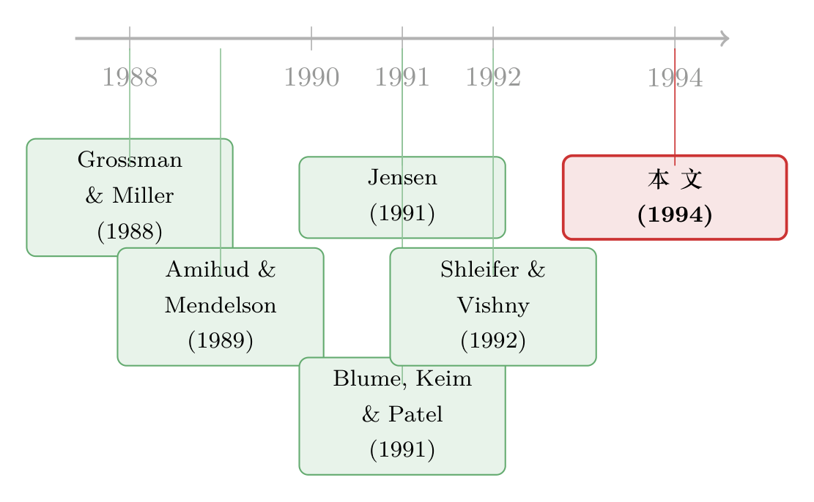

差一年就翻身：一家垃圾债保险公司，怎样被新闻「挤」死在谷底
本文读的是 DeAngelo, DeAngelo & Gilson (1994, JFE)：1991 年 4 月被加州监管者查封的 First Executive（第一executive 保险集团，下称 FE），是美国史上最大的保险公司倒闭案。它持有约 65% 的垃圾债，远高于行业 6–7% 的平均水平。但作者的核心论点是——压垮它的，与其说是垃圾债本身，不如说是一场被差别化的负面报道点燃的「银行挤兑」：媒体逼着 FE 在垃圾债市场的谷底抛售了 $4 billion 资产，而此后市场反弹了 50–60%。如果它能熬住、把债持到期，按市场平均涨幅，它本会在 1992 年 4 月变回有偿付能力，股权价值甚至接近 $10 亿。查封在当时的信息下是站得住脚的；可挤兑本身，正是它走向死亡的推手。
1 一桩「死得太早」的破产
先讲一个让人意难平的事实。
1988 年，《财富》把 FE 旗下的主力子公司 Executive Life（下称 ELIC）评为全美第十五大寿险公司、盈利能力第三。它在 Fred Carr 治下，从 1974 年全美第 355 位一路冲到第 15 位，保额从 $700 million 涨到近 $60 billion。这是一台增长机器。
然后，机器停了。1991 年 4 月 11 日，加州新任民选保险专员 John Garamendi 以「面临最终破产的严重危险」为由查封了 ELIC；五天后纽约监管者查封了它的另一家主力子公司 ELNY；5 月 13 日，母公司 FE 申请破产保护。35 万名保单持有人和年金领取者的命运，就此被冻结。
到这里，故事听起来再普通不过：一家激进的保险公司，重仓了一堆「垃圾」，泡沫破了，活该。
但作者抛出了一个让整篇论文成立的反事实：FE 死得太早了。垃圾债市场在 1991 年初开始反弹，从 1991 年 1 月到 1992 年 4 月，市场平均回报约 50%，到 1992 年 7 月接近 60%。作者的模拟显示，在其他条件不变、它的垃圾债按市场平均涨幅升值的前提下，FE 本会在 1992 年 4 月恢复偿付能力——而且若没有那场逼它贱卖资产的挤兑，它的股权价值本可以攀到接近 $10 亿。
于是真正的问题浮出水面：如果它本可以熬过来，那它究竟是被什么杀死的？
2 一个被忽略的对照：垃圾债 vs. 房地产
要回答「被什么杀死」，得先回答「为什么是它」。
首先，把镜头拉远。1989 年中到 1990 年底，垃圾债市场确实乱：违约频发、监管收紧、Drexel 自身陷入困境。按 Merrill Lynch 和 Salomon Brothers 的指数，垃圾债价格从 1989 年 7 月到 1990 年底平均跌了 9.2%。这当然伤到了 FE。
可接着，一个自然的问题是：同期那些「传统」的、被认为「稳健」的寿险公司，日子就好过吗？
不见得。它们重仓的是房地产和按揭。而由 Wilshire Associates 和 全美房地产投资信托协会 (NAREIT) 维护的、基于股票市场的房地产与按揭指数，在 1989 年 7 月到 1990 年底分别跌了 36.6% 和 41.6%。作者做了一个关键的「去杠杆」校正后指出：这些跌幅大约是同期垃圾债 9.2% 跌幅的 2.5 倍。

Figure 3: reports publicly available indices that measure the investment perfor-
换句话说，如果你按「资产基本面到底坏了多少」来排队，房地产的窟窿其实比垃圾债更大。可媒体的注意力分配，却完全是另一副样子。
3 差别化的负面报道：32 篇 vs. 几乎沉默
这就是这篇论文最锋利的一刀。
作者数了数：从 1989 年 7 月到 1991 年 4 月被查封，四家主流报纸（《巴伦周刊》、《洛杉矶时报》、《纽约时报》、《华尔街日报》）一共发了 32 篇关于 FE 的特写文章 (feature articles)。注意，特写不同于「新闻 (news)」——新闻报道新发生的事实，而特写讨论的是已经报道过的旧事。因为特写代表的是媒体「自主选择」去聚焦谁，所以它恰恰能度量舆论的关注是不是被差别化地倾倒在了某一家身上。
对照之下，1989–1990 年关于 FE 的负面特写数量，超过了排名前十的寿险公司的总和——尽管这些公司的法定资本和 ELIC 相当，房地产敞口又逼近 ELIC 的垃圾债敞口。一个具体的例子：Travelers 在 1990 年 10 月的房地产减记，规模和股价冲击都与 FE 的垃圾债减记相当，但得到的报道却少得多。
为什么偏偏是 FE？作者给的答案带着浓重的「金融政治学」味道。Fred Carr 本人就是个话题人物：他在 1960 年代做 Enterprise Fund 时是个「神枪手」式的激进基金经理，后来基金出了问题，很多投资者把账算在他头上，而媒体在讨论 FE 的垃圾债麻烦时，总爱把这段旧账翻出来。更要命的是，Carr 在给股东的信里，年复一年地对整个行业开炮——

Table 1: (continued)
如表 1 所示，作者把 Carr 1984–1990 年股东信里的「挑衅性言论」分成四类：嘲讽行业反应迟钝、很多同行其实已资不抵债；炫耀 ELIC 的业绩引来同行的嫉妒与模仿；批评公司管理层制造「垃圾管理 (junk management)」；以及呼吁监管者推行按市值计价 (mark-to-market accounting) 来揭穿那些资本不足的同行。其中最讽刺的一条是：他反复标榜 FE 自己处于「优越的按市值计价头寸」——而几年后，正是他垃圾债的市值，把他自己钉在了耻辱柱上。
这一层「为什么舆论盯上你」的机制，和今天我们熟悉的故事其实是同一条暗线——一个让市场「负面偏向」的力量，往往是公司自己（或公司的对手）参与塑造出来的。关于媒体的内生偏向，可参见《新闻里那条「负面偏向」，竟是公司自己「逼」出来的》。
4 真正关键的一步：把「减记」当成挤兑的发令枪
然后，一个更微妙的问题来了：差别化的报道是怎么转化成致命一击的？
答案藏在「announcement（披露动作）」和「economic deterioration（经济基本面恶化）」的时间差里。
1990 年 1 月 22 日，FE 公告了一笔针对 1989 年盈利的 $515 million（税后）垃圾债损失计提（下称「减记 writedown」）。当天股价从 $6.75 跌到 $4，单日跌幅 40.75%；整个 1990 年 1 月，股价累计跌了 65.4%。

Figure 1: Stock price performance for Ftrst Executive Corporation, industry control sample of life
如图 1 所示，FE 的股价在 1980 年代中期一度大幅跑赢 CRSP 市值加权指数和寿险行业指数，从 1987 年底开始掉队，到 1989 年中之后则相对两个基准断崖式下行。
但真正关键的一步在于：作者证明，这笔减记里的坏消息，绝大部分本来是可以被预测的。FE 同时披露，1989 年第四季度垃圾债市值跌了 $908 million（正文另一处记为 $968 million）。可 Salomon 的综合高收益指数显示，三、四季度分别只跌了 1.75% 和 2.46%；FE 三季度的 10-Q 已经披露了 $528 million 的垃圾债下跌。按同样的相对表现外推，第四季度的「可预测」跌幅约为 $714 million——也就是说，在 1 月 22 日之前可得的信息，就已经能解释当天披露的实际跌幅的约 3/4。
于是反转出现了：既然坏消息早已写在墙上，挤兑却恰恰在公告之后才开始，那说明保单持有人反应的，是「公告」这个动作本身，而不是引发公告的经济恶化。减记没有创造新的坏消息，它只是把坏消息「盖了章、承认了」——而这一声枪响，配上铺天盖地的报道，足以让信心崩塌。
减记当天，Moody's、S&P、A.M. Best 接连下调评级（分别在 1 月 23、25、29 日）。十天后，加州监管者就进驻 ELIC 派了常驻审查员。
5 「银行挤兑」是怎样跑起来的
接着看挤兑本身有多猛。

Table 2
如表 2 所示，FE 在 1989 年就已感受到退保压力，全年支付额超过 $1.3 billion（1986 年才 $295 million）。但 1990 年彻底失控：全年退保与保单贷款合计近 $3.9 billion（精确为 $3,888 million），其中 $3 billion 集中在前两个季度。年金占了 1990 年总额的 70% 以上（前两季度更达 75%）——因为当年卖给客户年金的经纪人，靠把客户「倒手」进竞争对手的产品来赚佣金，反过来加剧了挤兑。

Figure 2: reports week y life and annuity sur
如图 2 所示，把 10–30 天的处理时滞考虑进去，每周的退保支付高峰紧跟着 1990 年 1 月的减记——这正是「挤兑紧随公告」的微观证据。Schulte (1991) 记下了 FE 洛杉矶办公室的景象：每来一波坏新闻，大厅就挤满了老年人，许多人八十多岁，有的是寡居者，全靠这份年金过活。加州监管者接到的电话多到不得不专设了一条 800 热线。
这就是「run on the bank」最朴素的形态：保单（尤其是可退保的年金）相当于活期负债，一旦信心崩塌，挤兑就会逼着公司在最差的时点抛售流动性最差的资产。1991 年 4 月，临查封前，ELIC 的退保申请飙到每天 260 件（一季度才 60–70 件）；ELNY 被查封后退保从每天约 25 件涨到 400–500 件。失去子公司的现金流，FE 再也撑不住了。
6 查封站得住脚吗？一个诚实的「双面」结论
读到这里，你可能以为作者要为 FE 鸣冤、痛斥监管。但这篇论文最让我尊重的地方，恰恰是它两头都不偏。
一方面，作者明确说：以查封当时可得的信息看，监管者的查封是站得住脚的 (defensible)。他们估计 FE 查封前按市值计价的股权约为 −$2.5 billion，一年内恢复偿付能力（或接近）的概率约 17–34%。Price Waterhouse 当时甚至对 FE 的财报出具了「无法表示意见」，因为它对持续经营能力存疑。在一个负债随时可能被挤兑提走的机构面前，监管者按下暂停键，并不荒唐。
另一方面，作者又用三组论据说明 FE 其实比账面数字更接近偿付能力：（i）它的很多垃圾债是债务重组中potentially pivotal（潜在关键性）的股权式头寸，理应享有控制权溢价 (control premia)；（ii）它「持有到期」的策略本可省下大量流动性成本；（iii）在 1989 年中到 1990 年底那段史无前例的市场动荡里，市场价格本身可能就不是内在价值的好度量。
这正是全文的张力所在：查封在事前是合理的，挤兑在事后又确实是致命的。两者并不矛盾——它说的是，一个在信息有限时正确的决定，仍可能是一个让坏结果自我实现的决定。
7 模拟：把「如果它熬住了」算出来
最后一步，作者做了那个最有冲击力的反事实。
他们用真实的垃圾债市场回报路径，结合对 FE 查封前股权的估计，去问一个问题：假如 FE 保持独立、把垃圾债持有到期，它需要多久才能（按市值）恢复偿付能力？
Figure 4: summarizes our estimates of in April 1992 as a function
如图 4 所示，作者把 1992 年 4 月 FE 的估计股权价值，画成了某个关键参数的函数。结论很直白：在垃圾债按市场平均速率升值（即从 1991 年 1 月到 1992 年 4 月涨约 50%）的情形下，FE 本会在 1992 年 4 月恢复偿付能力；而且若没有那场被迫的、把 $4 billion 资产甩卖在谷底的挤兑，它的股权价值本可以接近 $10 亿。
这就把整篇论文的逻辑闭合了：垃圾债的基本面损失（9.2%）远没有大到致命；真正把 FE 推下悬崖的，是「差别化报道 → 减记被当作发令枪 → 年金挤兑 → 谷底贱卖 → 错过反弹」这条链。挤兑不是结果，它是死因之一。
这里值得提醒的是：作者并没有写一个带最优化方程的理论模型，这是一篇临床式 (clinical) 案例研究——它的力量来自把一家公司的每一笔退保、每一篇报道、每一次减记，按天对齐到价格上，再用市场数据做反事实。它的「方程」，是会计恒等式和市场指数，而不是贝尔曼方程。
8 文献脉络
把这篇论文放进它所属的那条河流里看，会更清楚它的位置。
最上游，是关于流动性与价格的洞见。Grossman & Miller (1988) 把市场的即时性看作一种需要被补偿的服务，Amihud & Mendelson (1989) 进一步把流动性接进了资本成本——它们共同奠定了「被迫在错误时点交易要付出代价」这个直觉。再往前一步，Shleifer & Vishny (1992) 给出了火线甩卖 (fire sale) 的市场均衡逻辑：当一类资产的天然买家自己也陷入困境时，被迫清算者只能以远低于内在价值的价格脱手。FE 在垃圾债谷底抛售 $4 billion，正是这套逻辑的活体标本。

与此并行的，是 Jensen (1991, 1993) 的金融政治学 (politics of finance) 视角：高杠杆、垃圾债、敌意收购这些 1980 年代的金融创新，在政治和舆论场里遭到的攻击，往往与它们真实的经济后果不成比例。本文关于「为什么偏偏是 FE 被舆论盯上」的分析，几乎就是这一命题的一个保险业版本（沿着这条线索，可参见《perceptions-and-the-politics-of-finance-junk-bonds-and-the》）。垃圾债市场本身的回报与波动，则由 Blume, Keim & Patel (1991) 和 Altman (1991) 提供了基准数据，使得本文的 9.2%、50–60% 这些反事实有据可依。
本文（DeAngelo, DeAngelo & Gilson, 1994）所处的位置，是把「流动性—火线甩卖」和「金融政治学」两条线，焊在同一个案例上：它既是一篇关于挤兑如何摧毁一家清偿能力本可恢复的机构的实证，也是一篇关于舆论如何成为挤兑催化剂的研究。同期 Fenn & Cole (1994) 关于寿险业资产质量披露与传染效应的工作，是它最近的邻居。
而它在今天的回声格外清晰：当年是四家报纸的 32 篇特写，今天是社交媒体上四天之内的一条推文——机制惊人地一致（可参见《四天，一条推特，挤垮一家银行》）。当年是垃圾债在谷底被贱卖，今天是公司债基金在危机里的火线甩卖（可参见《差点死掉的那个市场：一场公司债流动性危机的微观解剖》 与《同一个发行人的两只债券，戳破了「火线甩卖」的幻觉》）。
评论与延伸（Q&A + 研究方向）
(a) 几个可能的疑问
Q：这不就是「事后诸葛亮」吗——市场后来涨了，就说它本不该死？
作者其实很小心地把「事前」和「事后」分开了。他们明确承认，以查封当时的信息看，查封是合理的（股权约
−$2.5 billion、一年内恢复偿付的概率仅17–34%）。「本可恢复」是用事后市场路径做的反事实，目的不是给监管定罪，而是量化挤兑这一项对最终结局的边际贡献。两个判断可以同时成立。
Q：FE 持有 65% 的垃圾债，难道不是它自己作的吗？
重仓垃圾债确实是高风险策略，作者并不否认这点伤害了 FE。但论文的对照恰恰说明：以「基本面损失」论，传统险企的房地产敞口（去杠杆后跌幅约为垃圾债的
2.5倍）更糟，却没有触发同等的挤兑。所以「持仓结构」不足以单独解释为什么是 FE 死、而别人活——差别化的舆论与挤兑，是不可省略的一环。
Q：减记本身不是新信息吗，市场反应有什么不对？
关键在量级。作者用 Salomon 指数外推，证明 1 月 22 日披露的第四季度垃圾债跌幅里，约
3/4在公告前的公开信息里就能预测到。既然坏消息基本是「旧闻」，挤兑却在公告后才爆发，说明触发挤兑的是承认与盖章这个动作（以及随之而来的评级下调和报道），而非新的经济恶化。
Q：年金为什么比普通保单更危险？
因为 FE 的单一保费递延年金可在缴纳一笔随时间递减至零的费用后退保，相当于一种活期负债。更糟的是，卖出这些年金的独立经纪人，靠把客户转投竞争对手产品赚佣金，于是有强烈动机主动「劝退」——1990 年退保里年金占了
70%以上。这把一个潜在的挤兑变成了被销售渠道主动推动的挤兑。
Q：所谓「控制权溢价」是不是在为 FE 的资产硬抬价？
这是全文最可争议的一处。作者的依据是：FE 的不少垃圾债是债务重组中潜在关键性的大额头寸，理论上应享有控制权私利（呼应 Barclay & Holderness, 1989）。但这类溢价难以精确度量，且在被迫快速清算时根本无法兑现——所以它能说明「内在价值高于市值」，却未必能说明「挤兑时能卖出这个价」。读者应把它当作上界，而非中枢估计。
Q：这对监管者的实践含义是什么？
一个尖锐的两难：对一个负债可挤兑的机构，监管「按下暂停键」在信息有限时是理性的；但若该机构的困境很大程度上是舆论与挤兑自我实现的，那么查封反而会把「本可恢复」锁死成「确定破产」。这暗示监管需要区分「基本面已死」与「流动性被挤兑打死」——这恰是后来对银行处置「forbearance（宽容）vs. 即时干预」之争的核心。
(b) 几个可能的研究问题与提案
1. 把「差别化报道」量化进现代信用事件
【经济故事】本文用人工计数
32篇特写来度量差别化关注。今天我们有全文新闻数据库和 NLP，可以系统地构造「相对同业的异常负面报道强度」，再看它是否能在控制基本面后预测债券利差跳升、基金赎回与火线甩卖。机制是：报道→信心→赎回→贱卖。 【可行性】高。RavenPack / 道琼斯新闻 + TRACE 债券成交 + 基金流数据都现成；识别上可用同行业、同评级公司作对照，借「外生新闻冲击」（如与本公司无关的行业丑闻引发的关注外溢）做工具变量。
2. 年金/可退保负债的「挤兑弹性」
【经济故事】FE 的死因之一是可退保年金这种「活期负债」。不同寿险公司负债的可退保比例、退保费结构差异很大，这构成了一个天然的「负债端脆弱性」横截面。问题：负债越「可挤兑」的险企，在信用冲击下是否被迫卖出更多、实现更大的火线甩卖损失？ 【可行性】中。美国寿险公司的法定报表（NAIC）披露退保、保单贷款与负债结构；可在 2008 或 2020 的信用冲击窗口做事件研究。难点是把「主动退保」与「正常到期」分离。
3. 共同持仓与保险业的传染式甩卖
【经济故事】当多家险企持有相似的债券组合，一家被迫清算会压低价格，进而恶化其他持有人的市值——这正是 Shleifer-Vishny 火线甩卖在保险业的放大版。FE 的
$4 billion抛售对当时的垃圾债价格有多大冲击？ 【可行性】高。可借鉴《买在一起，卖也在一起：当保险公司的持仓「撞衫」》 的持仓相似度构造，用 NAIC 逐券持仓 + 债券价格，识别「组合重叠度」对清算价格冲击的影响。
4. 外资持有人是不是「更易挤兑」的负债？
【经济故事】把「挤兑催化剂」的逻辑搬到公司债的持有人结构上：在信用恶化时，哪类持有人（外资、被动基金、保险）更容易在谷底「先跑」，从而放大火线甩卖？这把本文的「负债端脆弱性」推广到了债券的「持有人端脆弱性」。 【可行性】中。需要持有人层面的债券持仓（如 eMAXX、各国央行/监管披露）+ 危机窗口的成交价。识别难点在于持有人类型与债券特征的内生匹配，可用持有人因外部约束（如评级触发的被动抛售）做准自然实验。
参考文献
Altman, E. I. (1991). Defaults and Returns on High Yield Bonds: An Update Through the First Half of 1991. Working paper, New York University.
Amihud, Y., & Mendelson, H. (1989). Liquidity and Cost of Capital: Implications for Corporate Management. Journal of Applied Corporate Finance, 65–73.
Barclay, M., & Holderness, C. G. (1989). Private Benefits from Control of Public Corporations. Journal of Financial Economics 25, 371–395.
Blume, M. E., Keim, D. B., & Patel, S. A. (1991). Returns and Volatility of Low-Grade Bonds 1977–1989. Journal of Finance 46, 49–74.
DeAngelo, H., DeAngelo, L., & Gilson, S. C. (1994). The Collapse of First Executive Corporation Junk Bonds, Adverse Publicity, and the 'Run on the Bank' Phenomenon. Journal of Financial Economics 36, 287–336.
Fenn, G., & Cole, R. (1994). Announcements of Asset-Quality Problems and Contagion Effects in the Life Insurance Industry. Journal of Financial Economics, forthcoming.
Grossman, S. J., & Miller, M. H. (1988). Liquidity and Market Structure. Journal of Finance 43, 617–637.
Jensen, M. C. (1991). Corporate Control and the Politics of Finance. Journal of Applied Corporate Finance 4, 13–33.
Jensen, M. C. (1993). The Modern Industrial Revolution, Exit, and the Challenge to Internal Control Systems. Journal of Finance 48, 831–880.
Schulte, G. (1991). The Fall of First Executive: The House that Fred Carr Built. Harper Business.
Shleifer, A., & Vishny, R. W. (1992). Liquidation Values and Debt Capacity: A Market Equilibrium Approach. Journal of Finance 47, 1343–1366.